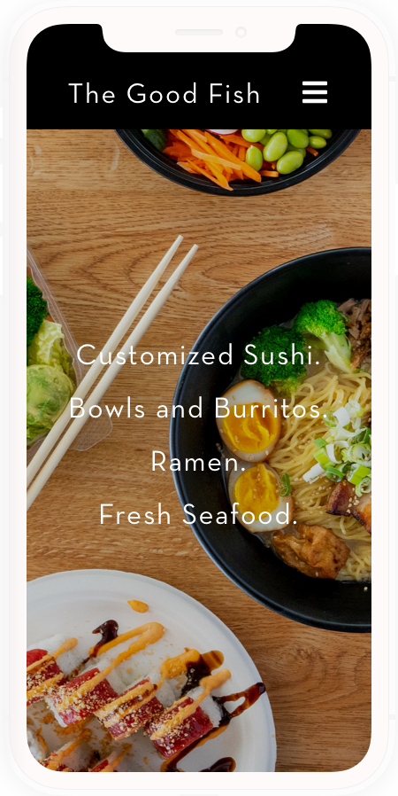
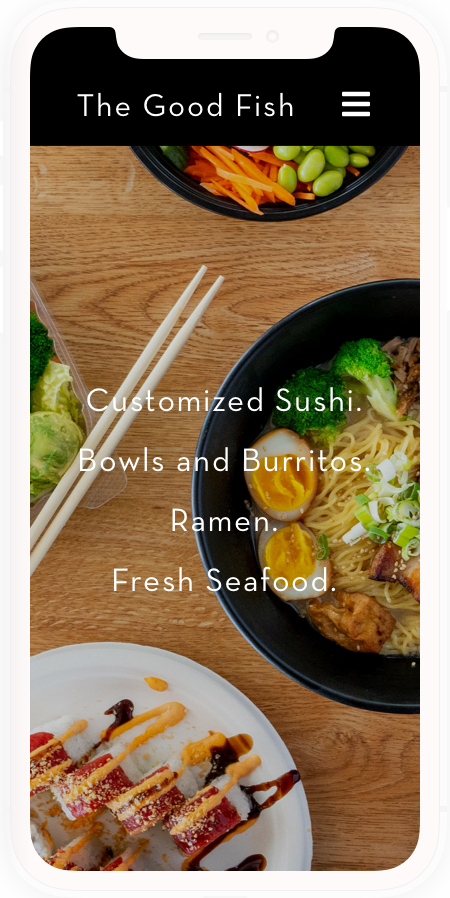

Scope.
The restaurant wants to utilize the website for online orders, as well as provide information about the restaurant, menu, and contact details.
The Problems.
With many busy customers visiting the restaurant, sometimes the queue can trail out the door. The client would like to leverage the website to alleviate the ordering process for the customers and staff to increase efficiency. However, the current website faces the listed issues below:
- Lack of Awareness - Many customers do not know that the website exists.
- Scattered Content - Incomplete pages and content scattered throughout current site.
- No “Order Online” feature - There is no feature on the website for users to order online, other than finding the phone number to call the restaurant.
 


Research Questions.
I studied how competitors marketed, architected, and used their websites to gather details about how to solve the problems at hand. Below are key questions that were explored:
- How do customers reference the menu and order?
- What problems do customers face when ordering?
- What are design patterns used at other restaurants?
- How are the websites being promoted, and how are users landing on the page?
- What is the most convenient way to display the many menu items and contact details on the website?
- How are competitors encouraging customers to order online?
Competitive Analysis.
Along with the key takeaways pertaining to design patterns, we found that the websites were being promoted on their social media (primarily Yelp, Instagram, and Facebook). Also menu items were mainly written without any supplementary photos, and most websites did not have the “Order Online” feature.
Design Process.
After researching competitor websites and gathering the findings, I mapped out user flows and developed a content strategy to incorporate the key elements that would boost the branding, experience, and most importantly—ordering online.
Site Map.
I created a site map to provide a clearer picture of the pages that will be designed and where we will be tackling the key opportunities.

User Flow.
I then developed a user flow for existing and new customers to outline the steps in order to reach ordering online.

Wireframes.
Once the initial user flow and content strategy was finalized, I created wireframes for user testing.


User Testing.
I conducted live user testing and had them perform tasks on the prototype to understand the following:
- To find out any road blocks or frustrations when ordering online.
- To determine design inconsistencies and usability problems throughout the website.
- To understand the thought process behind each user.
- To establish baseline user performance and user-satisfaction levels of the user interface for future usability evaluations.
- To identify potential design concerns to improve the efficiency, productivity, and end-user satisfaction.
Testing Results.
After running through usability testing, I found that the testers were already familiar with restaurant websites, so ordering online was “easy” for them, even among older adults. Below are further findings:
- 33% of users immediately went to the gallery to see what caught their attention.
- 50% browsed through the menu before attempting to make an order.
- 50% asked if they can use Yelp when deciding what to order
- 83% of order online attempts were through the CTA on the global navigation because “it’s right there.”
- 83% users were more likely to order online after learning about the feature.
- 100% users were satisfied with their experiences. (The only concern was logging in/creating a ChowNow account. But upon further discussion, I learned that the inconvenience cost is low because they were able to also use Facebook or Google to log in.)
With these results, it confirmed the importance of the number and quality of photos, ordering online, social media (especially Yelp), and the ease-of-use of the “Order Online” feature.
Hi-Fidelity Mock-Ups.
After the testing results, I made the adjustments, further iterated with the client, applied the style onto the wireframes, and created a clickable prototype with documentation. The client wanted to also see what the site would look like with a darker background, so two sets of mock-ups were made.


A/B Testing.
We wanted to figure out which background users preferred, so we conducted a quick A/B test to decide which one people preferred.
- 80% of the testers preferred the light background because it “looked cleaner” and “it makes the food pop out more.”
Results.
The client was highly satisfied with the designs as the following issues were addressed: incomplete pages, scattered content, pattern consistency, and the lack of the order online feature. The next step, which the client preferred to manage, was to promote the website in-restaurant and social media to drive traffic to the website.